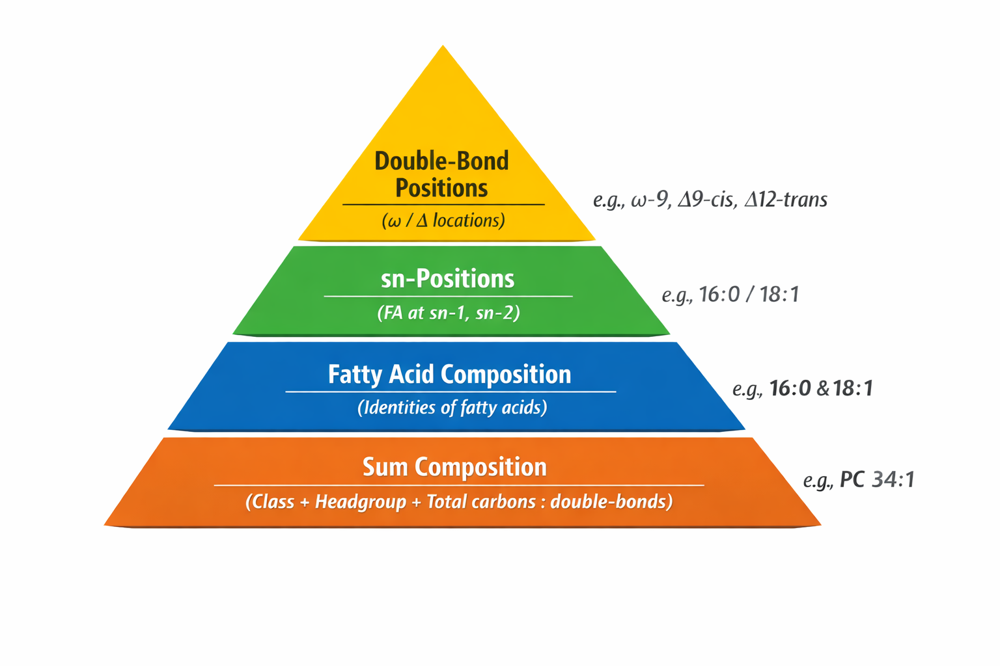

When lipid species are measured in both positive and negative ionization modes under identical chromatographic conditions, they elute at the same retention time but may be reported under different identifiers. These identifiers reflect the degree of structural information that can be resolved in each polarity, as positive and negative modes produce different, polarity-specific fragment ions. This step standardizes lipid naming across polarities so that all adduct forms of a lipid map to a single, unified identifier, with the most structurally informative (longest) identifier retained.
Result: Positive- and negative-mode entries referring to the same lipid share the same
Lipid Unique Identifier, enabling a single kinetic trajectory downstream. In addition, the herein
canonical retention time of the chosen representative is written back to
all matched rows.

Sum Composition is derived as follows:
Lipid Unique Identifier contains a newline, use the substring before the first newline (\n).Lipid Name is present, use that.Lipid Unique Identifier.Sum Composition
and then clustered by a sliding window in Precursor Retention Time (sec).
Within each cluster, the longest Lipid Unique Identifier is selected,
and its identifier and retention time are written back to all rows in that cluster.Sum Composition is identical; andPrecursor Retention Time (sec) differs by ≤ overlap time seconds.cf containing D7 are labeled
D7-standard = True.D) atoms are merged into hydrogen (H)
counts in cf and Adduct_cf.The script expects the following columns to be present in each CSV:
Lipid Unique Identifier (and optionally Lipid Name for deriving Sum Composition)Precursor Retention Time (sec) (the script will derive Precursor Retention Time (min) if missing)cf (for D7 detection and D→H normalization); Adduct_cf is optional but will also be normalized if present
The only user-configurable parameter is overlap time, the retention-time tolerance (in seconds)
used for within-mode and cross-polarity matching.
Default: 8 seconds.
Recommended selection:
overlap time to avoid false merges while preserving true matches.
If Standardize_positive_and_negative_lipid_IDs/Standardize_positive_and_negative_lipid_IDs.cmd exists in your
working directory, the “Standardize Polarity Syntax” button will appear and execute it. This convenience launcher is
Windows-specific; you can always run the Python script directly on any platform.